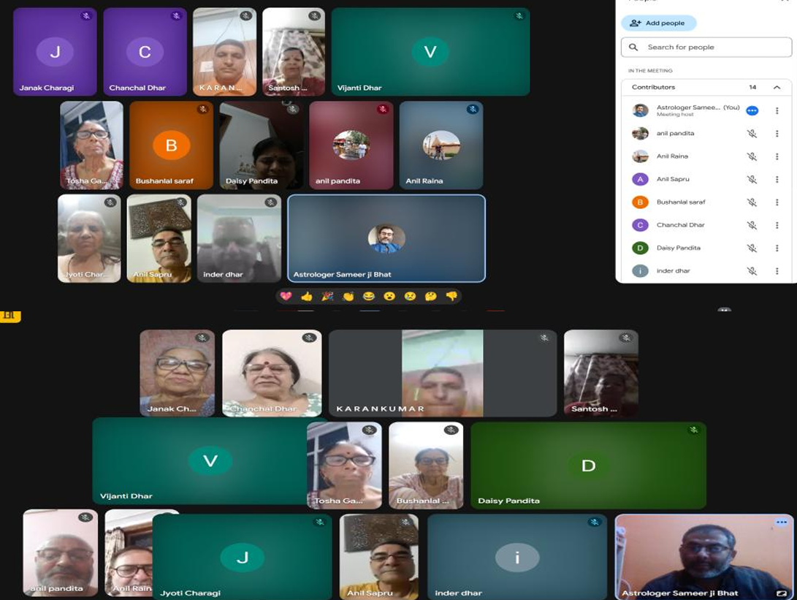

Serve Humanity, Serve the Divine Within
Promoting social welfare, compassion, and equality since 2024
Reg. No: 2024/21/4/178
Our Activities (2024–2025)
- Medical Camp at Muthi, Jammu (20-10-2024): Free consultations, ECG, and blood tests for 50+ beneficiaries.
- Distribution of Woollen Clothes (25-12-2024): Warm clothing distributed to underprivileged families in Jammu.
- Sweaters for School Children (14-01-2025): 50 students at Govt. Middle School Jagti received new sweaters.
- Education Support: Scholarships totaling ₹90,000 for 13 orphan students.
- Marriage Support: Assistance with essential items for a poor girl’s marriage in Samba.
- Religious Conference: Promoted Sanatan Dharma, Bhakti Marg, and seva.
- Online Spiritual Classes: Daily sessions on Shrimad Bhagavad Gita and rituals.
- Online Gita Classes: Regular since 2013, promoting Gita teachings.
- Children’s Gita Classes (Vessu, Anantnag): For youth to learn values and scriptures.
Gallery
Sweaters for School Children (14-01-2025):
Gita Classes At KP Colony Vessu, Anantnag :
For the past 12 years, the trust has been organizing Geeta Ji classes at KP Colony, Vessu, specifically for children of different age groups. These sessions aim to instill moral values, spiritual understanding, and cultural awareness through the teachings of the Bhagavad Gita. Conducted in a child-friendly and interactive manner by experienced instructors, the classes help young minds connect with the timeless wisdom of our scriptures. The trust remains committed to nurturing the next generation with strong ethical foundations and invites more children to benefit from this noble initiative.
Online Gita Classes:
In an effort to spread awareness about the teachings of the Bhagavad Gita, our trust has initiated online Gita classes for the community since 2013. These sessions aim to educate participants about the spiritual and philosophical essence of the Gita, highlighting its importance in leading a balanced and fulfilling life. The classes have received an encouraging response, with people from various backgrounds joining to enhance their understanding of this sacred text.